Solve Grafana Connection Issue With GPT
Initial Prompt On GPT
🏃I’m running into an issue and could use some help! 💡
🤔What the situation:
* I can access the graphana by bitnami installaation on the vm✅
* I can't access it using http://192.168.3.180:3000/ from my host🔐
🤔Which things did i try
* i am running vm ware workstation is running
* I can access the ssh from the host to workstation 🚀
* I can’t access Grafana from my host❌
💾 Data From the system is
* This site can’t be reached
192.168.3.180 took too long to respond.
🖼️Add Screenshot and line breaks for me to add
🙏Tell me different wways to resolve the issue
🎯 Write step by step
Tool > Text Blaze
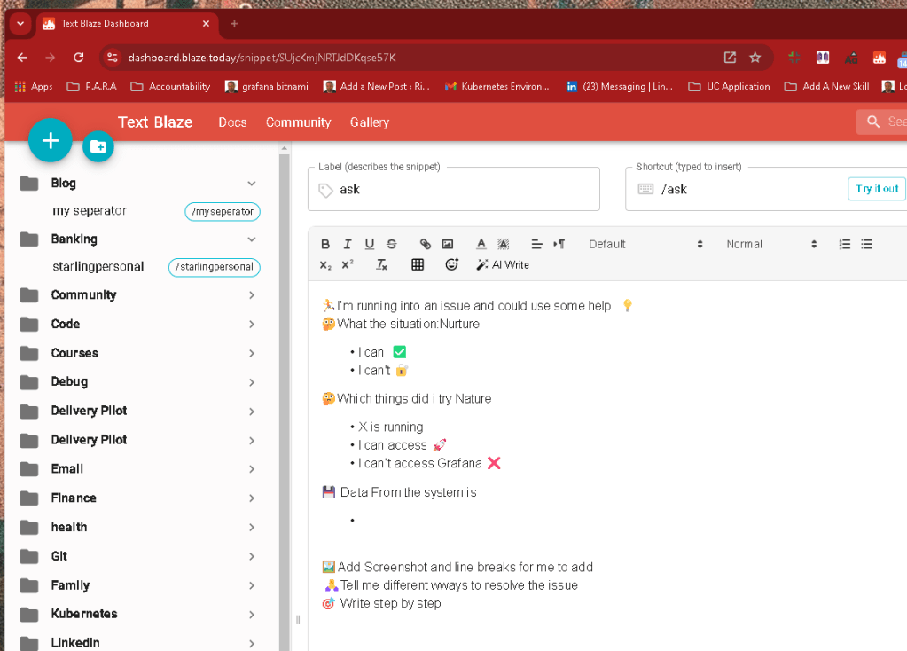
🖼️ Output Ready for Word Press Format and
🖼️ Add Screenshot and line breaks for me to add after everystep
Added these ^^^
It seems like your issue could be related to network settings on the VM or the host, especially since SSH is working but you can't access Grafana from the host's browser. Here are several potential solutions you can try, step-by-step:
1. Check Grafana Service Status
-
First, ensure Grafana is running properly inside the VM:
bash sudo systemctl status grafana -
If it's not running, start it:
bash sudo systemctl start grafana
2. Check VM Network Configuration
You might be using NAT or Bridged networking on your VM. If you're using NAT, your host may not have direct access to the VM's IP.
Solution:
-
Open VMware Workstation.
-
Select your VM.
-
Go to Settings > Network Adapter.
If it's set to NAT, switch it to Bridged mode to ensure your host can communicate with the VM directly.
- Make sure to restart your VM after making changes.
3. Update Grafana Configuration (for External Access)
By default, Grafana might be listening on localhost, which means it only accepts connections from inside the VM.
Solution:
-
Edit Grafana's configuration file to allow connections from other hosts:
bash sudo nano /etc/grafana/grafana.ini -
Find the line that says
# http_addr =and set it to0.0.0.0(this binds Grafana to all available IPs):
ini http_addr = 0.0.0.0 -
Restart Grafana to apply the change:
bash sudo systemctl restart grafana
4. Check Firewall Settings on the VM
If there's a firewall running on the VM, it might be blocking access to port 3000.
Solution:
-
Check if the firewall is enabled:
bash sudo ufw status -
If it's active, allow traffic on port
3000:
bash sudo ufw allow 3000/tcp -
Restart the firewall if needed:
bash sudo ufw reload
5. Check Host Firewall (If Any)
Ensure the firewall on your host isn't blocking the connection to the VM's IP address.
Solution:
- If you're using a firewall on your host (e.g., Windows Defender Firewall), add an inbound rule to allow connections on port
3000to the VM's IP address.
6. Check VM Network Interface IP
Ensure the IP address of the VM (192.168.3.180) is still valid and has not changed. If DHCP is being used, the VM's IP address might have changed.
Solution:
-
Inside the VM, check the current IP address:
bash ifconfig -
Ensure that the IP is correct and matches the one you're using in your host's browser.
7. Verify Port Listening
Ensure that Grafana is listening on the correct port and IP address.
Solution:
-
Run the following command in the VM:
bash sudo netstat -tuln | grep 3000 -
You should see something like
0.0.0.0:3000or192.168.3.180:3000, which means Grafana is listening correctly. If not, go back and check thegrafana.iniconfiguration.
8. Try Ping and Traceroute
Verify network connectivity between the host and VM by running a ping and traceroute from the host to the VM.
Solution:
-
On your host machine, open a terminal or Command Prompt and run:
bash ping 192.168.3.180 -
Then try:
bash tracert 192.168.3.180 -
If ping fails, there may be a deeper network issue (e.g., incorrect IP or network settings).
9. Reboot VM and Host
Sometimes, simply rebooting both the host and VM can resolve network issues.
🖼️ Screenshot & Details
Please provide a screenshot of the browser error if possible, along with the output of:
sudo netstat -tuln | grep 3000
sudo ufw status
sudo systemctl status grafana
With this step-by-step approach, you should be able to identify and resolve the issue. Let me know how it goes!
After reread there is 2 places i can see
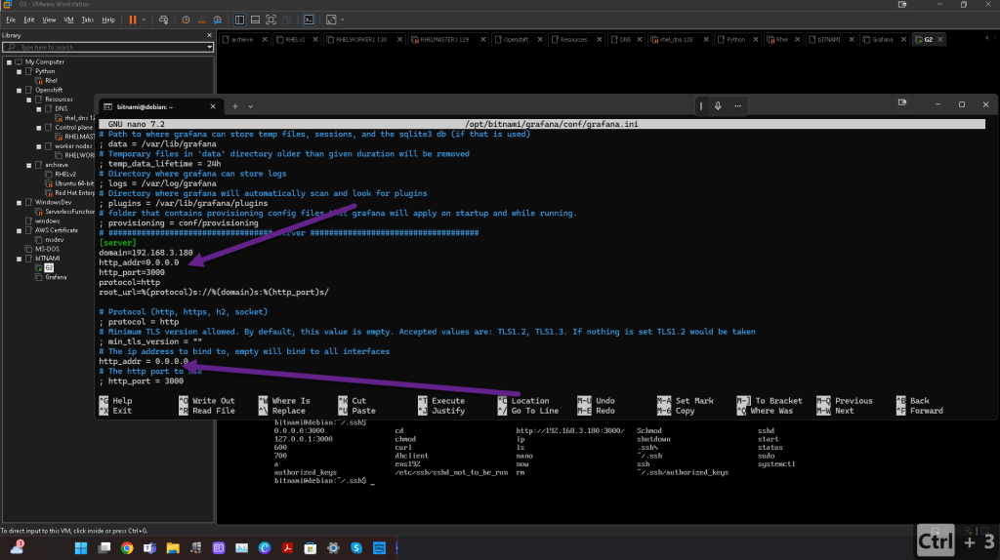
which lines to change >>> cat all the file
To make Grafana accessible on your host machine, you only need to adjust a couple of key settings in the grafana.ini file. You've already set some of them, but here’s a list of what should be checked or fixed:
Fix the Following Lines:
-
Ensure Grafana binds to all interfaces (
0.0.0.0) so it’s accessible from outside the VM: -
Line:
http_addr = 0.0.0.0
This line is already correct, and no changes are needed. -
Set the correct domain to access Grafana from your host machine:
-
Line:
domain = 192.168.3.180
This line looks good as well, no changes needed. -
Check the root URL to ensure Grafana is reachable via the configured domain and port:
-
Line:
root_url = %(protocol)s://%(domain)s:%(http_port)s/
This is correct for your setup. -
Ensure the correct port is being used:
-
Line:
http_port = 3000
This is correct, as you want Grafana to be accessible via port 3000.
Restart Grafana:
After confirming these changes, you need to restart Grafana to apply the configuration changes:
sudo /opt/bitnami/ctlscript.sh restart grafana
Check Connectivity:
Once Grafana is restarted, try accessing it from your host machine using:
http://192.168.3.180:3000
If you still encounter issues after this, check the firewall settings (both on the VM and host machine) to ensure port 3000 is open for inbound connections.
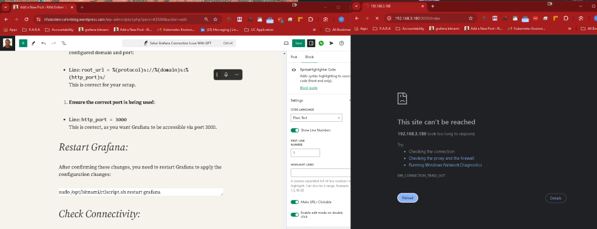
==================================================================
*** REWRITE THE PROMPT ***
==================================================================
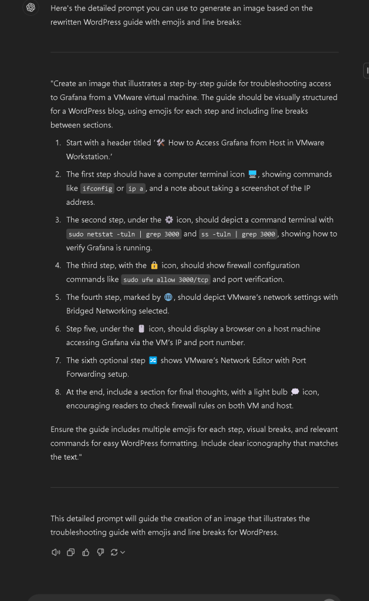
==================================================================
*** REWRITE THE PROMPT TO HELP YOURSELF >>> INVERT THAN WHO LEARN >> charlie mungar method ***
==================================================================
Create a debugging guide
illustrates a step-by-step
Troubleshooting access to Grafana
Setup in VMware virtual machine from Bitnmai image
The guide should be visually structured for a WordPress blog,
using emojis for each step and including line breaks between sections.
-
I can already access it inthe vmware workstation’
-
I cant access from my host 🖥️, showing commands like
ip a> I know that the machine virtual one is 192.168.3.180 when i do a curl on that machine with curl 192.168.3.180:3000 i see that it works and grafana runs -
I run
sudo netstat -tuln | grep 3000andss -tuln | grep 3000, showing how to verify Grafana is running >> i see it is running on the virtual machine -
I opened up the ports on the vm sudo
ufw allow 3000/tcpand port verification. -
I marked by 🌐, should depict VMware’s network settings with Bridged Networking selected.
-
Step five, under the 🖱️ icon, should display a browser on a host machine accessing Grafana via the VM’s IP and port number.
What should i do ?
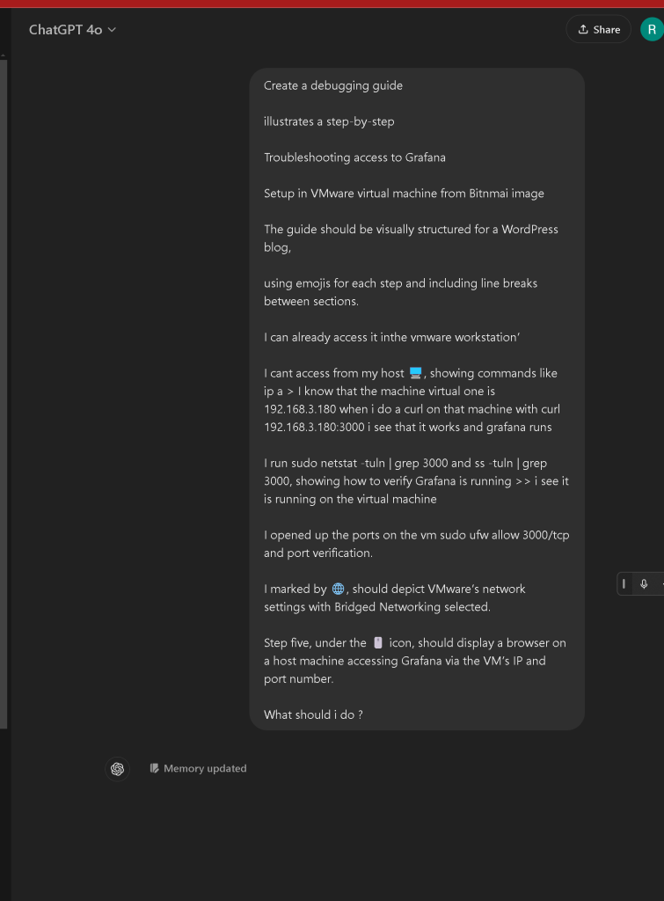
Here's a step-by-step debugging guide for troubleshooting access to Grafana, set up in a VMware virtual machine, designed to fit well on a WordPress blog and with a visual structure using emojis:
🖥️ Step 1: Confirm Grafana is Running
- Command:
sudo netstat -tuln | grep 3000
ss -tuln | grep 3000
- If you see port 3000 in the output, Grafana is running correctly within your VMware virtual machine.
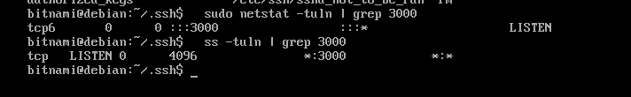
🌐 Step 2: Check Your VMware Network Settings
-
In VMware Workstation, go to Settings for your virtual machine.
-
Ensure the Network Adapter is set to Bridged Networking so the virtual machine shares the same network as your host machine. This step is crucial to allow your host to access the VM over the network.
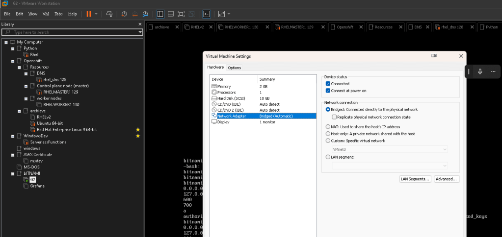
📡 Step 3: Verify the IP Address of the Virtual Machine
- Command:
ip a
- Find your virtual machine's IP address. For example, if your IP is
192.168.3.180, this is what you'll use from the host machine.
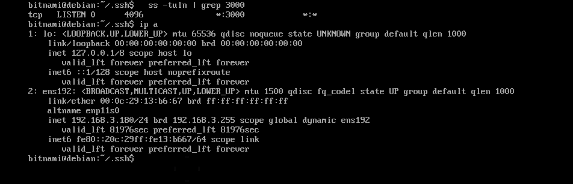
🔑 Step 4: Check Firewall and Open Ports
- Command:
sudo ufw allow 3000/tcp
sudo ufw status
- Ensure port 3000 is open to allow external connections to Grafana.
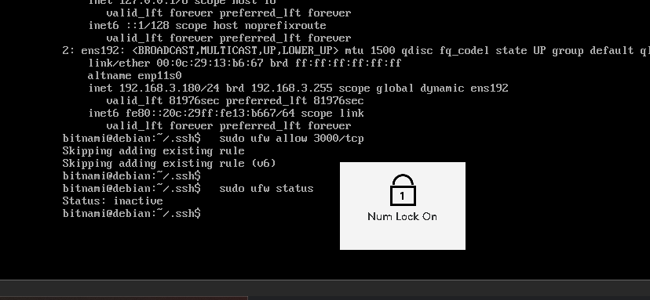
🖱️ Step 5: Access Grafana from Host Machine
-
Open a browser on your host machine and navigate to:
http://192.168.3.180:3000 -
Replace
192.168.3.180with the IP address of your virtual machine. -
You should be able to access Grafana's login page from your host.
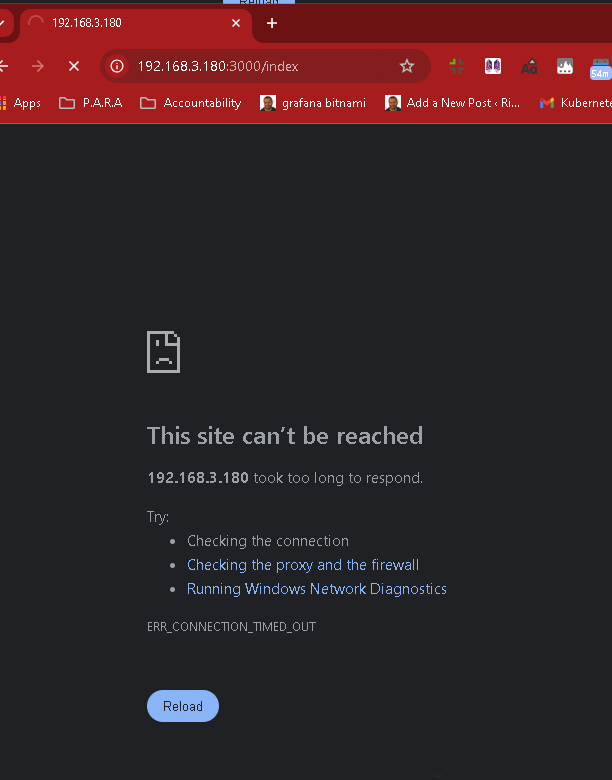
⚙️ Step 6: Troubleshoot Common Issues
- Ping the VM from Host:
ping 192.168.3.180
-
If the ping fails, there may be a networking issue between your VM and host.
-
Check VMware Adapter:
Go to Control Panel > Network Connections on your host and verify the VMware Network Adapter is active.
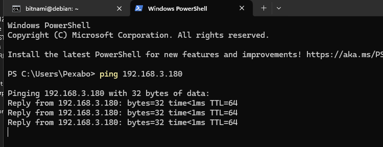
If these steps don’t work, it could be a networking configuration issue at a deeper level, or the firewall on the host machine may need adjustments.
Let me know if this helps!
PS C:\Users\Pexabo> Set-NetFirewallProfile -Profile Domain,Public,Private -Enabled False
PS C:\Users\Pexabo>
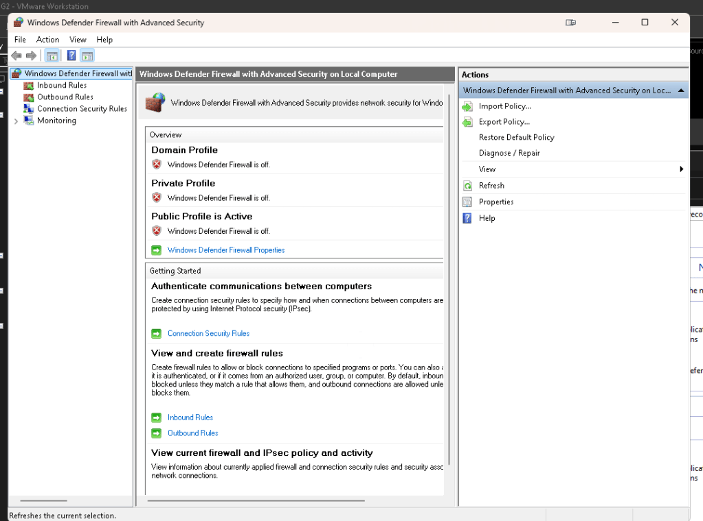
==================================================================
*** inverted again with output and screenshots ***
==================================================================
Based on the details in your guide and the steps you've already taken, it looks like the problem might still be related to network connectivity or port access. Let's try a few more advanced steps and checks:
🛠 Advanced Troubleshooting Steps:
📡 Step 7: Verify VMware Bridged Network Interface on the Host
-
Go to Control Panel on your host machine.
-
Navigate to Network and Sharing Center > Change Adapter Settings.
-
Look for VMware Network Adapter (it may be named VMnet0 or something similar).
-
Ensure the VMnet0 is connected and active, especially if you are using Bridged Networking in VMware. If it’s not enabled, enable it.
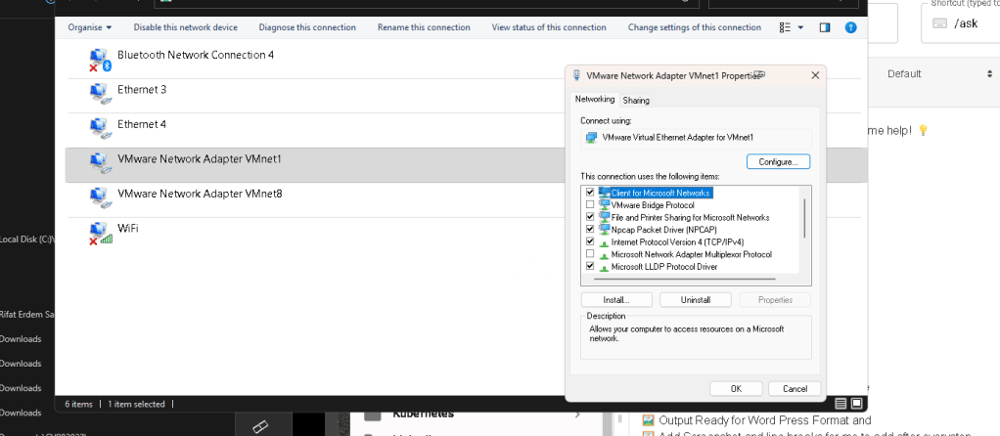
Enabled bridge setting inside >>> no both dont have the broidge protocol
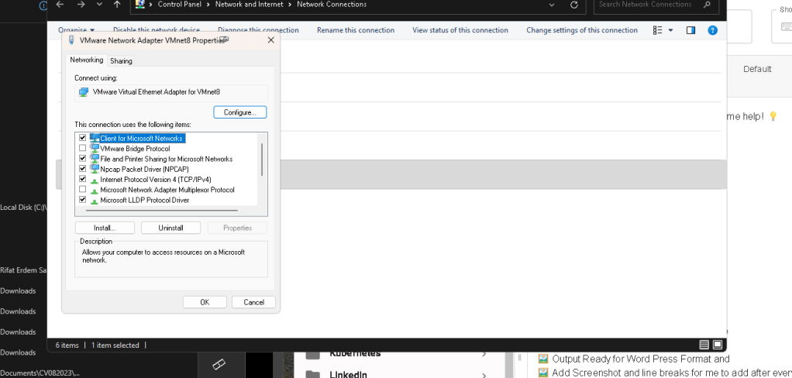
If the VMware Bridge Protocol is not selected in the network adapter settings, your virtual machine will not be able to bridge directly to your physical network. This has several implications depending on how your virtual network is set up:
What Happens if VMware Bridge Protocol is Disabled:
-
Loss of Network Bridging:
Without the VMware Bridge Protocol, your virtual machine will not connect directly to your physical network. This means that it cannot obtain an IP address from the same network as your host, making it impossible to communicate with other devices on the network, including the host machine. -
No Access to Local Network Devices:
The VM may not be able to access local network devices (e.g., printers, routers, etc.) because it is not connected to the physical network. -
Network Isolation:
The VM may operate in a more isolated network mode (like NAT), meaning it could still access external networks like the internet, but it won’t be visible or reachable by devices on the same network, including your host.
Why You Should Enable VMware Bridge Protocol:
-
Bridged Networking Mode:
When you enable Bridged Networking, the VM gets its own IP address on the local network, making it act as if it is just another physical machine connected to your router or switch. This is essential if you want your host and VM to communicate directly (e.g., for accessing services like Grafana from the host machine). -
Direct Communication with Host:
Enabling the VMware Bridge Protocol allows the host machine to reach the virtual machine's IP address (e.g.,192.168.x.x). This is likely necessary for your Grafana access issue.
Solution:
- Enable VMware Bridge Protocol in the VMnet adapter settings to restore direct communication between your host and virtual machine. Once enabled, your VM will be able to bridge to your local network and get an IP address in the same range as your host machine.
Make sure to restart your virtual machine after enabling the VMware Bridge Protocol, and verify the network settings by using ip a inside the VM to check its IP address.
🔄 Step 8: Reconfigure VMware Network Settings (Switch to NAT)
-
Switch Networking Mode:
If you’re using Bridged, try switching to NAT as sometimes Bridged mode can cause conflicts if the network isn’t properly forwarding traffic. -
In VMware, go to Settings for your virtual machine.
-
Select Network Adapter.
-
Switch from Bridged to NAT.
-
Restart the virtual machine after applying changes.
-
Check Access Again:
Once switched to NAT, attempt to access Grafana from your host machine using the IP provided by the VM (check withip ainside the VM).
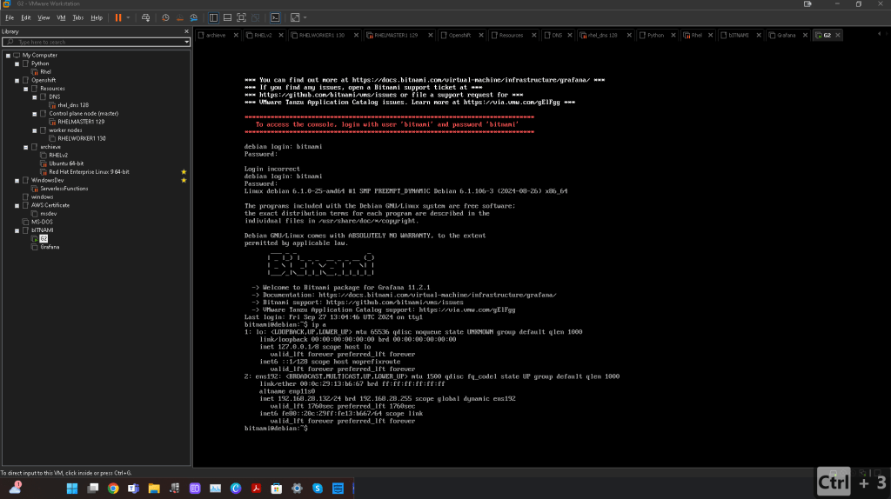
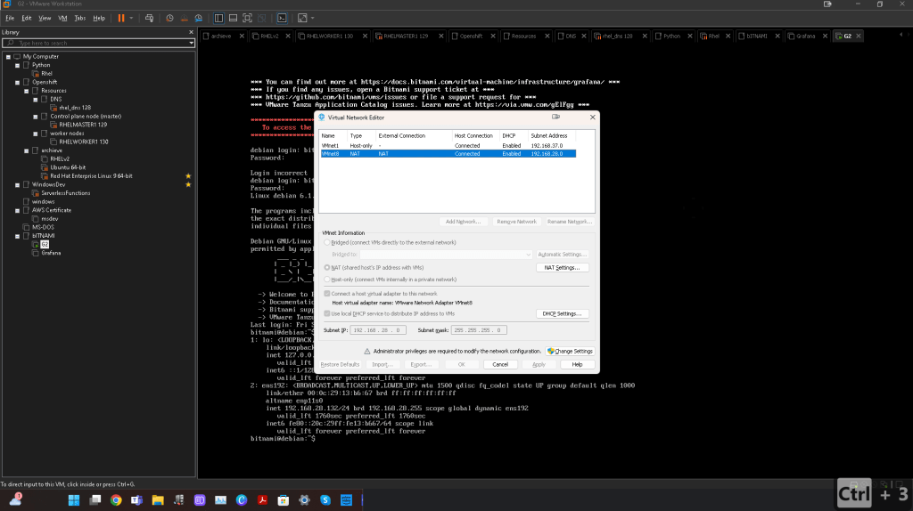
🔍 Step 9: Check Host Routing Table
Run this command on the host machine to ensure there is a proper route to the VM’s IP address:
route print
Check if there is an entry for the subnet that the VM is on (e.g., 192.168.3.x). If not, it could indicate a routing issue that is preventing your host from reaching the VM.
`route print
PS C:\Users\Pexabo> route print
===========================================================================
Interface List
22...58 11 22 b8 b3 50 ......Intel(R) Ethernet Controller X550
13...58 11 22 b8 b3 51 ......Intel(R) Ethernet Controller X550 #2
20...bc f1 71 6e 2a df ......Intel(R) Wi-Fi 6 AX200 160MHz
3...bc f1 71 6e 2a e0 ......Microsoft Wi-Fi Direct Virtual Adapter
16...be f1 71 6e 2a df ......Microsoft Wi-Fi Direct Virtual Adapter #2
21...00 50 56 c0 00 01 ......VMware Virtual Ethernet Adapter for VMnet1
11...00 50 56 c0 00 08 ......VMware Virtual Ethernet Adapter for VMnet8
23...bc f1 71 6e 2a e3 ......Bluetooth Device (Personal Area Network) #4
1...........................Software Loopback Interface 1
47...00 15 5d 17 6e b7 ......Hyper-V Virtual Ethernet Adapter
===========================================================================
IPv4 Route Table
Active Routes:
Network Destination Netmask Gateway Interface Metric
0.0.0.0 0.0.0.0 192.168.3.1 192.168.3.46 25
127.0.0.0 255.0.0.0 On-link 127.0.0.1 331
127.0.0.1 255.255.255.255 On-link 127.0.0.1 331
127.255.255.255 255.255.255.255 On-link 127.0.0.1 331
169.254.0.0 255.255.0.0 On-link 169.254.189.40 281
169.254.189.40 255.255.255.255 On-link 169.254.189.40 281
169.254.255.255 255.255.255.255 On-link 169.254.189.40 281
172.21.64.0 255.255.240.0 On-link 172.21.64.1 5256
172.21.64.1 255.255.255.255 On-link 172.21.64.1 5256
172.21.79.255 255.255.255.255 On-link 172.21.64.1 5256
192.168.3.0 255.255.255.0 On-link 192.168.3.46 281
192.168.3.46 255.255.255.255 On-link 192.168.3.46 281
192.168.3.255 255.255.255.255 On-link 192.168.3.46 281
192.168.28.0 255.255.255.0 On-link 192.168.28.1 291
192.168.28.1 255.255.255.255 On-link 192.168.28.1 291
192.168.28.255 255.255.255.255 On-link 192.168.28.1 291
192.168.37.0 255.255.255.0 On-link 192.168.37.1 291
192.168.37.1 255.255.255.255 On-link 192.168.37.1 291
192.168.37.255 255.255.255.255 On-link 192.168.37.1 291
224.0.0.0 240.0.0.0 On-link 127.0.0.1 331
224.0.0.0 240.0.0.0 On-link 192.168.37.1 291
224.0.0.0 240.0.0.0 On-link 192.168.28.1 291
224.0.0.0 240.0.0.0 On-link 169.254.189.40 281
224.0.0.0 240.0.0.0 On-link 192.168.3.46 281
224.0.0.0 240.0.0.0 On-link 172.21.64.1 5256
255.255.255.255 255.255.255.255 On-link 127.0.0.1 331
255.255.255.255 255.255.255.255 On-link 192.168.37.1 291
255.255.255.255 255.255.255.255 On-link 192.168.28.1 291
255.255.255.255 255.255.255.255 On-link 169.254.189.40 281
255.255.255.255 255.255.255.255 On-link 192.168.3.46 281
255.255.255.255 255.255.255.255 On-link 172.21.64.1 5256
===========================================================================
Persistent Routes:
None
IPv6 Route Table
Active Routes:
If Metric Network Destination Gateway
1 331 ::1/128 On-link
21 291 fe80::/64 On-link
11 291 fe80::/64 On-link
13 281 fe80::/64 On-link
22 281 fe80::/64 On-link
47 5256 fe80::/64 On-link
11 291 fe80::477:7d40:ca2b:e5ab/128
On-link
47 5256 fe80::79ff:dae4:968d:8e9c/128
On-link
22 281 fe80::b809:8fef:506a:ba52/128
On-link
13 281 fe80::bab2:4f00:44b8:4fbe/128
On-link
21 291 fe80::c021:1963:32f4:171f/128
On-link
1 331 ff00::/8 On-link
21 291 ff00::/8 On-link
11 291 ff00::/8 On-link
13 281 ff00::/8 On-link
22 281 ff00::/8 On-link
47 5256 ff00::/8 On-link
===========================================================================
Persistent Routes:
None
PS C:\Users\Pexabo>`
🔑 Step 10: Set Grafana to Listen on All Interfaces
You mentioned already allowing Grafana to listen on all IPs (0.0.0.0). Just ensure the Grafana config file (/etc/grafana/grafana.ini) contains this:
http_addr = 0.0.0.0
Restart Grafana after confirming this:
sudo systemctl restart grafana
🔍 Step 11: Use nmap for Port Scanning
On your host machine, install nmap (or use another network scanner tool) to verify that the port is actually open and reachable on the VM:
nmap -p 3000 192.168.3.180
This will confirm whether port 3000 is open and accessible from your host.
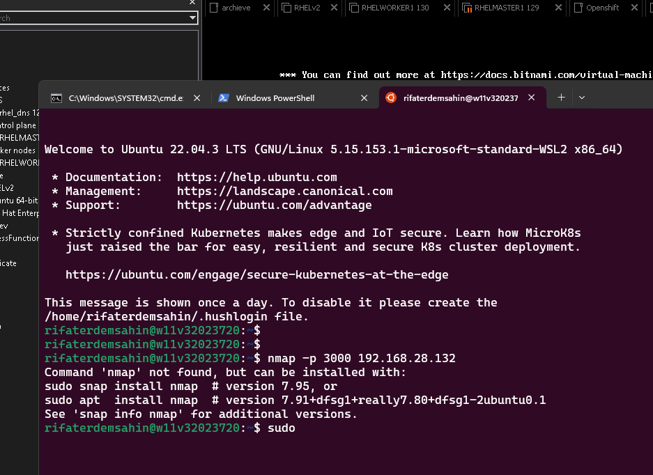
rifaterdemsahin@w11v32023720:~$ nmap -p 3000 192.168.28.132
Starting Nmap 7.80 ( https://nmap.org ) at 2024-09-27 14:12 BST
Note: Host seems down. If it is really up, but blocking our ping probes, try -Pn
Nmap done: 1 IP address (0 hosts up) scanned in 3.02 seconds
rifaterdemsahin@w11v32023720:~$
🚧 Step 12: Inspect Browser Console for Errors
When trying to access Grafana from your browser, open the Developer Tools (F12 on Chrome/Edge) and check the Network tab for any failed requests or errors. It might give you more insight into what’s going wrong.
By following these additional steps, we should be able to narrow down the cause of the issue further. Let me know what you find!
Imported from rifaterdemsahin.com · 2025